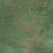

2,4 ha · Olari, com. Plopșoru
văzută schimbată prima dată pe 4 mai 2026

Autorizația cea mai apropiată nu acoperă tăierea: autorizația începe după ce schimbarea se vedea deja.
APV 2600152600170 · Ocolul Silvic Turceni, valabilă 15 iun. 2026 – 15 sept. 2026, la 0 m
Ce se vede în poze: În «poza detaliată» din 2024, zona marcată era acoperită de coroane dense de copaci, fără sol vizibil. În «după» apare mai deschisă, cu sol gol și culoare mai pală, ceea ce arată că pădurea a fost tăiată. Un permis de exploatare valabil din iunie 2026 se suprapune aproape total peste zona marcată, ceea ce susține această concluzie.
în arie protejată: Coridorul Jiului